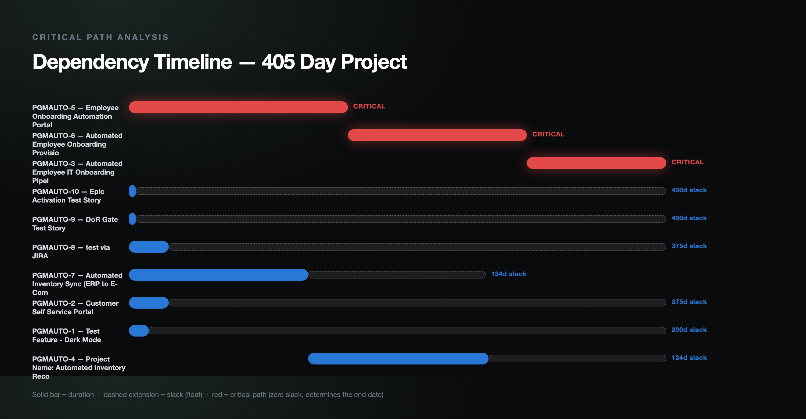

Portfolio project: deterministic scheduling math, no LLM
Critical Path Radar
Dependency intelligence that separates schedule risk from visible noise
Real Critical Path Method (CPM) math (forward pass, backward pass, slack) applied to Jira Blocks links. It is not an agent and calls no LLM: a deterministic pipeline fetches the links, runs CPM, then combines slack and staleness into a risk ranking, a Markdown report and a Gantt chart.
See what is measuredView the repoWhat is not built
- 10 unit tests passing
- CPM checked against a textbook network
- CI green on the latest commit when checked
- No LLM anywhere in the repo
- Self-created Jira links (3), not simulated
- Jira reading code has no tests

01
The problem
RAG status (the job of exec-status-rollup) tells you a workstream looks unhealthy. It cannot tell you whether that workstream's health matters to the delivery date: a stalled item with 300 days of slack is a non-event; a stalled item with zero slack is the actual emergency.
That distinction needs a graph algorithm, not another prompt. The repo implements CPM by hand rather than calling a library, and checks it against a known textbook answer instead of only against itself.
Slack is what makes it urgent
The risk layer combines CPM slack with staleness. A stale item with zero slack is the one standing between the project and its deadline.
A silent, backwards graph
The first pass got Jira's inward and outward link semantics backwards and produced a fully reversed dependency graph that still ran without error. It was caught by inspecting real output against links I knew I had created, not by a stack trace.
A naive-versus-aware date bug
Jira's
duedateis a bare date whilecreatedis an offset-aware timestamp; subtracting them raisedTypeError. Fixed by comparing at.date()granularity.
02
How it works
run_analysis.py fetches the dependency links from Jira, runs CPM, classifies each item from its slack and staleness, and renders a table, a Markdown report and a chart. The same data gives the same result every run; nothing is model-driven.

docs/images/critical_path_gantt.png), shown in the README under its real-output section.Swipe the diagram sideways to see all of it.
Stages of the diagram, one at a time
Stage 1 Fetch the graph
jira_graph.py reads the project's issues and Blocks links into nodes and edges.
Issues with no due date get a default duration, flagged in the output.
Stage 2 Forward and backward pass
cpm.py computes earliest and latest start and finish and the slack of every activity, and marks the critical path.
Stage 3 Classify the risk
risk.py turns slack and staleness into four severities, from CRITICAL_AT_RISK down to HEALTHY.
Stage 4 Report
A ranked table, a Markdown report and a Gantt chart. The tool is read-only against Jira and writes only a local report.
03
What is measured
Two results: the CPM implementation checked against a textbook network with a known answer, and the real output of one run against a small Jira dependency graph I created. python -m pytest tests/ -v gives 10 passing, all deterministic (re-run locally for this page).
Activity durations A5, B3, C7, D6, E4, F3 with edges A to B, A to C, B to D, C to E, D to F, E to F. The expected answer is independently known and pinned in tests/test_cpm.py.
| Path | Total duration | Expected result |
|---|---|---|
| A to C to E to F | 19 | Critical path; project duration 19 |
| A to B to D to F | 17 | Not critical; B and D carry 2 days of slack |
Caveat One textbook network, plus a few small hand-built cases (single node, parallel chains, diamond, cycle, empty graph) in the same test file. This checks the CPM math; it does not validate the Jira data fed into it.
Source: tests/test_cpm.py
The PGMAUTO Jira project had zero issue links, so three real Blocks links were created through the Jira API to have a genuine graph to analyze. This is the committed sample_output.md; it is not simulated, but it is tiny and self-made.
| Severity | Key | Slack (days) | Days stale |
|---|---|---|---|
| CRITICAL_ON_TRACK | PGMAUTO-6 | 0 | 0 |
| CRITICAL_ON_TRACK | PGMAUTO-5 | 0 | 0 |
| CRITICAL_ON_TRACK | PGMAUTO-3 | 0 | 0 |
| STALE_WITH_SLACK | PGMAUTO-10 | 400 | 26 |
| STALE_WITH_SLACK | PGMAUTO-9 | 400 | 26 |
| STALE_WITH_SLACK | PGMAUTO-8 | 375 | 68 |
| STALE_WITH_SLACK | PGMAUTO-2 | 375 | 68 |
| STALE_WITH_SLACK | PGMAUTO-1 | 390 | 26 |
| HEALTHY | PGMAUTO-7 | 134 | 0 |
| HEALTHY | PGMAUTO-4 | 134 | 0 |
Caveat Critical path PGMAUTO-5, PGMAUTO-6, PGMAUTO-3, 405 days; the inventory-sync chain (PGMAUTO-7, PGMAUTO-4) carries 134 days of slack. Durations for PGMAUTO-1, -10, -2, -8 and -9 are estimated because those issues have no due date, so the 405 days and the slack values depend on default-duration assumptions. Days stale are as of that run.
Source: sample_output.md
04
Architecture pattern
Pattern Not an agent: a deterministic analysis pipeline with no LLM.
No model is called anywhere in the repo, and the code is the same each run for the same data. Human gate: none needed, because it is read-only against Jira and writes only a local report.
- Jira: PGMAUTOissues and Blocks links
- jira_graph.pybuilds nodes and edges
- cpm.pyforward and backward pass, checked against the textbook answer in test_cpm.py
- risk.pyslack and staleness
- run_analysis.pytable and Markdown report
- render_chart.pyGantt PNG via headless Chrome
05
Competencies demonstrated
Program analytics
Forward and backward passes calculate earliest, latest and slack values.
Dependency management
Jira
Blocksrelationships become a directed execution graph.Technical judgment
Mathematical scheduling stays deterministic instead of being delegated to an LLM.
Quality engineering
Textbook expected results guard against confidently wrong bottleneck analysis.
Executive communication
Algorithmic output is translated into a prioritized schedule-risk ranking and a chart.
06
What is not built or not verified yet
Taken from the repository's README (Architecture pattern, the two bugs, the test list) and the file listing. Nothing here claims more than the committed files show.
- limit
Results depend on Jira dates and links
It reports on the graph it is given and acts on nothing. Issues with no due date get a default duration (flagged in the output), so results depend on the quality of the Jira dates and
Blockslinks. - limit
The graph is tiny and self-created
Three
Blockslinks I created in a project that had none. It shows the pipeline working, not how it behaves on a real program's dependency data. - not verified
No tests for the Jira reading path
The 10 tests cover
cpm.pyandrisk.py.jira_graph.py,run_analysis.pyandrender_chart.pyhave no tests; the reversed-link bug was caught by manual inspection of real output, not by a test. - not built
Not governed by agent-control-tower
It has no write side-effects to gate, so it is not one of the agents that tool governs. Its README says this on purpose.
07
Roadmap
- DoneCPM forward and backward pass with slack, verified against a textbook answer
- DoneJira
Blocksgraph builder, risk classification, Markdown report and Gantt chart - Not doneOpen gap: automated tests for the Jira reading and link-direction handling (none exist)
- Not doneOpen gap: run against a real program's dependency data (only a self-created three-link graph so far)